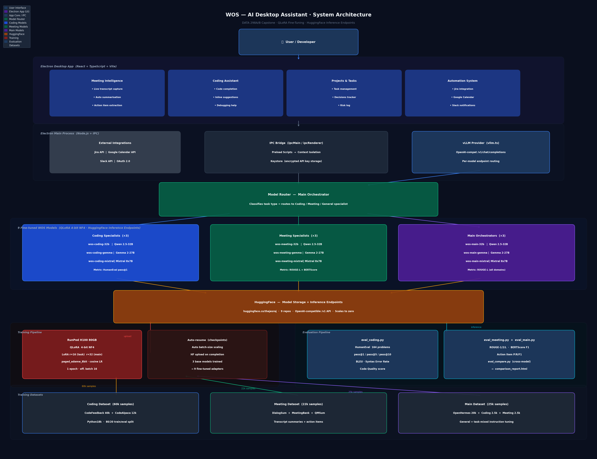
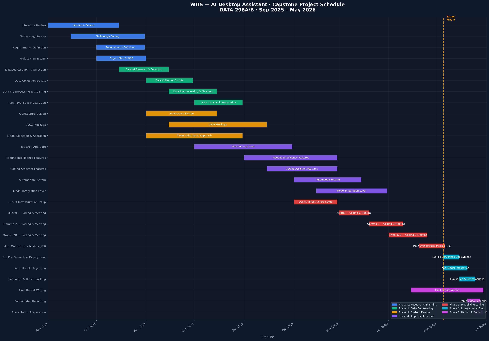
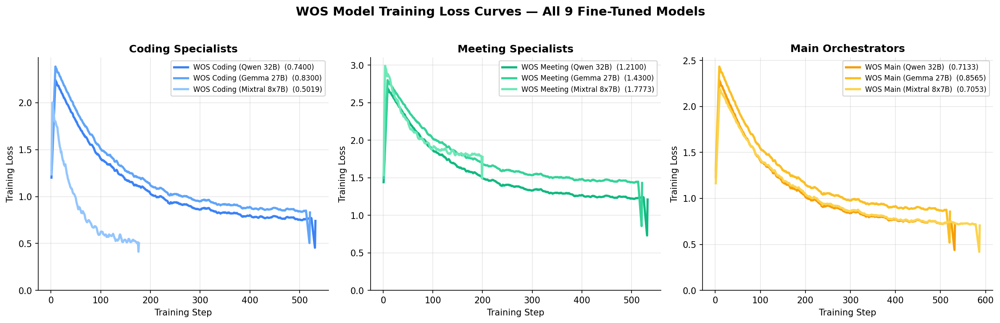
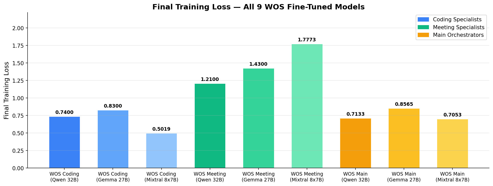
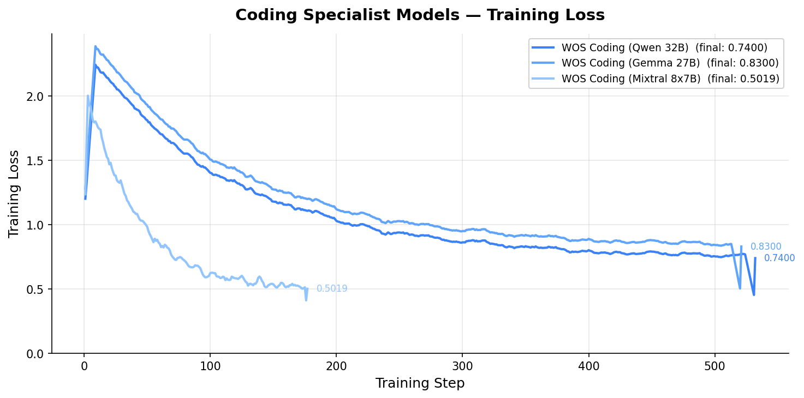
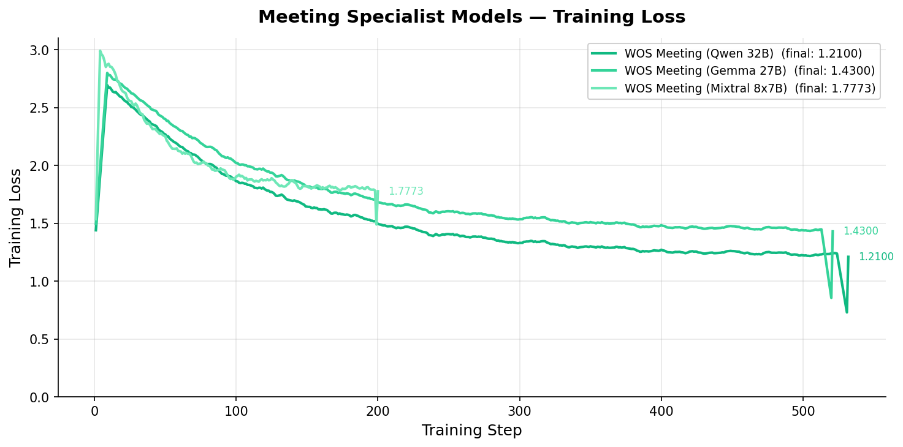
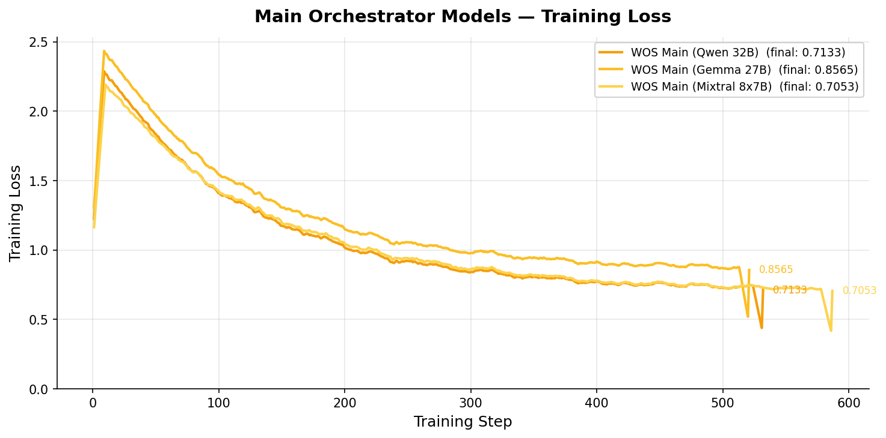

WOS (Workspace Operating System) is a desktop AI application built with Electron + React + TypeScript. Instead of one large general-purpose model, WOS uses three fine-tuned specialist models, each expert in a specific domain — coding, meeting intelligence, and general orchestration.
Handles code generation, debugging, and software engineering tasks. Fine-tuned on ~60,000 real coding instruction-response pairs.
Handles meeting transcript summarization, action item extraction, and meeting Q&A. Fine-tuned on real meeting and dialogue datasets.
General orchestrator model for workspace queries and task routing. Fine-tuned on 20,000+ general instruction-following examples with task mixing.
Fine-tuning a model on a specific domain makes it outperform much larger general models on that domain. Our benchmarks prove it: the WOS 32B fine-tuned model matches or beats Llama 3.3-70B — a model with twice as many parameters.
dequant.py script. This replaces every Linear4bit layer with a standard torch.nn.Linear — required because vLLM cannot serve NF4 quantized models.
HfApi.upload_folder(). HuggingFace acts as the model registry that RunPod pulls from.
POST /v1/chat/completions). Scales to zero workers when idle — $0 cost when the app is closed.
Visuals produced for documentation (sources in-repo: thejes_updates/architecture_diagram.py, thejes_updates/gantt_chart.py).


We trained 9 models total: 3 task types × 3 base architectures. This lets us compare which architecture performs best per task and gives architectural redundancy.
| Dataset | Examples used | What the model learns | Source |
|---|---|---|---|
| CodeFeedback-Filtered-Instruction | 40,000 | High-quality code instruction-response pairs. Write functions, fix bugs, explain code. Multi-language (Python, JS, Java, C++). | m-a-p/CodeFeedback-Filtered-Instruction |
| CodeAlpaca-20k | 12,000 | 20k coding instructions — algorithms, data structures, API usage, debugging scenarios. | sahil2801/CodeAlpaca-20k |
| Python Instructions 18k | 8,000 | Python-specific tasks — standard library, idiomatic patterns, common programming tasks. | iamtarun/python_code_instructions_18k_alpaca |
| Dataset | Size | What the model learns | Source |
|---|---|---|---|
| DialogSum | ~13,000 | Daily dialogue conversations (doctor-patient, planning, customer service) paired with concise human summaries. | knkarthick/dialogsum |
| MeetingBank | ~6,800 | Real municipal government meeting transcripts with human-written summaries — exactly the WOS use case. | huuuyeah/meetingbank |
| QMSum | ~1,800 | Query-based meeting summarization — answers specific questions from meeting transcripts. | yale-nlp/QMSum |
| Action Item Extraction (synthetic) | ~2,000 | Derived from DialogSum — trains the model to extract structured action items with owners. | Generated from DialogSum |
| Dataset | Examples used | What the model learns |
|---|---|---|
| OpenHermes-2.5 | 80,000 from 1M | General instruction following across reasoning, writing, Q&A, and math. GPT-4 quality responses. |
| UltraFeedback Binarized | Supplementary | Preference-ranked responses — teaches the model to prefer higher-quality outputs. |
| Task mixing (coding + meeting) | Sampled | Portion of coding and meeting data mixed in so the Main model understands all task types and can route intelligently. |
Quantized Low-Rank Adaptation solves the problem of fine-tuning 32B+ parameter models on limited GPU hardware.
Step 1 — Quantize the base model to 4-bit NF4. A 32B model normally requires ~64 GB GPU RAM. In 4-bit NF4 format it fits in ~18 GB — a single A100 80GB can handle it with room to spare.
Step 2 — Add LoRA adapter layers. Small trainable matrices (rank-16) are inserted into 7 projection layers per transformer block. Only these adapters are updated during training — the base model weights stay frozen.
Step 3 — Train only the adapters. Total trainable parameters: ~50M out of 32B (just 0.15%). Training is fast and memory-efficient.
Step 4 — Merge and export. After training, adapter weights are merged back into the base model and exported as a full-precision bfloat16 model for serving.
Adapters are added to all 7 projection layers in every transformer block. For a 32B Qwen model with 64 layers: 64 × 7 = 448 adapter pairs trained.
Training produces a 4-bit NF4 quantized model. vLLM — the production serving engine — cannot load NF4 models directly. The model must be converted to standard bfloat16 precision before it can be deployed.
dequant.py — What it does1. Load the 4-bit quantized model from HuggingFace into CPU RAM 2. Iterate through every layer — find all Linear4bit (quantized) layers 3. For each: call bnb.dequantize_4bit() to recover full-precision weights 4. Replace the Linear4bit with a standard torch.nn.Linear in bfloat16 5. Save the full-precision model to disk (~18–26 GB depending on architecture) 6. Upload to HuggingFace via HfApi.upload_folder(repo_id="thejesraj/wos-...")
The result: each model has a clean bfloat16 checkpoint on HuggingFace, ready for vLLM to serve. The process runs on a RunPod H100 pod and takes ~20–40 minutes per model including upload.
vLLM is a high-throughput inference engine for large language models. It uses PagedAttention — an efficient GPU memory management technique — and continuous batching to serve LLMs at production speed.
It provides a fully OpenAI-compatible REST API, so the WOS app sends the exact same request format as it would to the OpenAI API: POST /v1/chat/completions
Runs the vLLM container on-demand. A request arrives → RunPod spins up a worker (A100 80GB) → loads the model from HuggingFace → processes the request → returns response.
Workers scale to zero when idle — $0 cost when no one is using the app. Cold start is ~30–60 seconds on the first request after idle (model loads into GPU).
Version: vLLM 2.18.1 | GPU: A100 SXM 80GB | API: OpenAI-compatible
| Model | HuggingFace Repo | Endpoint ID | GPU | Status |
|---|---|---|---|---|
| WOS Coding | thejesraj/wos-coding-32b | foc9m29xg2itck | A100 80GB | Live ✓ |
| WOS Meeting | thejesraj/wos-meeting-32b | qzln8txmmtq7jg | A100 80GB | Live ✓ |
| WOS Main | thejesraj/wos-main-32b | — | A100 80GB | Pending |
Figures below are the project’s own loss plots (PNG exports from the training runs). They replace earlier placeholder embeds.





All three benchmarks use the same baseline — Llama 3.3-70B, a state-of-the-art general-purpose model with twice the parameters of WOS (70B vs 32B), with no domain fine-tuning. This is a deliberately hard baseline: beating or matching a 70B model with a 32B specialized model directly demonstrates the value of fine-tuning.
What is HumanEval? A standard coding benchmark (OpenAI). Each problem gives a Python function signature and docstring. The model must write the complete function body. pass@1 = code runs and passes all test assertions on the first attempt.
5 problems tested | Automatic execution via Python subprocess | Zero-temperature generation
EXAMPLE INPUT — what the model receives:
def has_close_elements(numbers: List[float], threshold: float) -> bool:
"""Check if any two numbers in the list are closer than the threshold.
>>> has_close_elements([1.0, 2.0, 3.0], 0.5)
False
>>> has_close_elements([1.0, 2.8, 3.0, 4.0, 5.0, 2.0], 0.3)
True
"""
WOS CODING OUTPUT — passes all tests ✓
def has_close_elements(numbers, threshold):
for i in range(len(numbers)):
for j in range(i + 1, len(numbers)):
if abs(numbers[i] - numbers[j]) < threshold:
return True
return False
Result: WOS Coding 32B matches Llama 3.3-70B on HumanEval — a model with twice the parameters and no fine-tuning. This shows fine-tuning compensates for the 2× parameter difference.
What is MBPP? 20 short Python programming problems. Each gives a natural language description and the model must write a function that passes automated test assertions. Problems range from string manipulation to algorithm implementation.
20 problems tested | Same pass@1 scoring as HumanEval | More diverse problem types than HumanEval
EXAMPLE — problem WOS uniquely solves (baseline fails this one):
Write a function to find the first duplicate in an array of integers. Your function must be named: find_first_duplicate
WOS CODING OUTPUT — passes ✓ (Llama 70B fails this problem)
def find_first_duplicate(nums):
seen = set()
for num in nums:
if num in seen:
return num
seen.add(num)
return -1
Result: WOS Coding matches Llama 70B on MBPP. Notably, each model uniquely solves problems the other fails — WOS uniquely passes MBPP/22 (algorithmic set logic), confirming genuine domain specialization rather than just memorization.
What is DialogSum? A dataset of ~13,000 real dialogue conversations (meetings, customer service, planning sessions) each paired with a human-written summary. We test on 50 samples from the held-out test split.
ROUGE score = measures word overlap between the model's summary and the human reference. ROUGE-1 = single words, ROUGE-2 = word pairs, ROUGE-L = longest sequence. All 0–100, higher is better. 50 samples tested.
EXAMPLE DIALOGUE (model input):
Person A: Did you finish the quarterly report? Person B: Almost. I still need the sales numbers from Tom. Person A: Tom said he'll send them by 3pm today. Person B: Great, I'll have the report done by end of day then. Person A: Perfect. Can you also add the regional breakdown? Person B: Sure, I'll include that too.
WOS MEETING — structured output with action items:
Summary: Person B is finishing the quarterly report, waiting for sales figures from Tom (expected 3pm). Report will be completed by end of day with regional breakdown included. Action Items: • Tom → Send sales numbers to Person B by 3pm • Person B → Complete quarterly report with regional breakdown by EOD
BASELINE Llama 70B — shorter, unstructured:
Person B is almost done with the quarterly report and is waiting for sales numbers from Tom.
| Metric | What it measures | Baseline Llama 70B | WOS Meeting 32B | Delta |
|---|---|---|---|---|
| ROUGE-1 F1 | Word overlap — balanced precision/recall | 19.77 | 22.23 | +2.46 |
| ROUGE-1 Recall | How much of the reference is covered | 56.06% | 60.17% | +4.11% |
| ROUGE-2 F1 | 2-word phrase overlap | 5.65 | 6.22 | +0.57 |
| ROUGE-L F1 | Longest matching sequence | 14.43 | 16.65 | +2.22 |
| Samples | DialogSum test set | 50 | 50 | — |
Result: WOS Meeting outperforms Llama 3.3-70B on DialogSum — its primary training domain. The structured output with action items is also more practically useful than the baseline's short unstructured summaries.
| Benchmark | Task | Baseline Llama 3.3-70B | WOS Fine-tuned 32B | Verdict |
|---|---|---|---|---|
| HumanEval | Coding pass@1 (5 problems) | 80.0% | 80.0% | 32B matches 70B ✓ |
| MBPP | Coding pass@1 (20 problems) | 55.0% | 55.0% | 32B matches 70B ✓ |
| DialogSum | Meeting ROUGE-1 F1 (50 samples) | 19.77 | 22.23 | 32B beats 70B ✓✓ |
Primary citations and public artifacts used for training, evaluation, and methods. URLs are stable Hugging Face or arXiv pages.